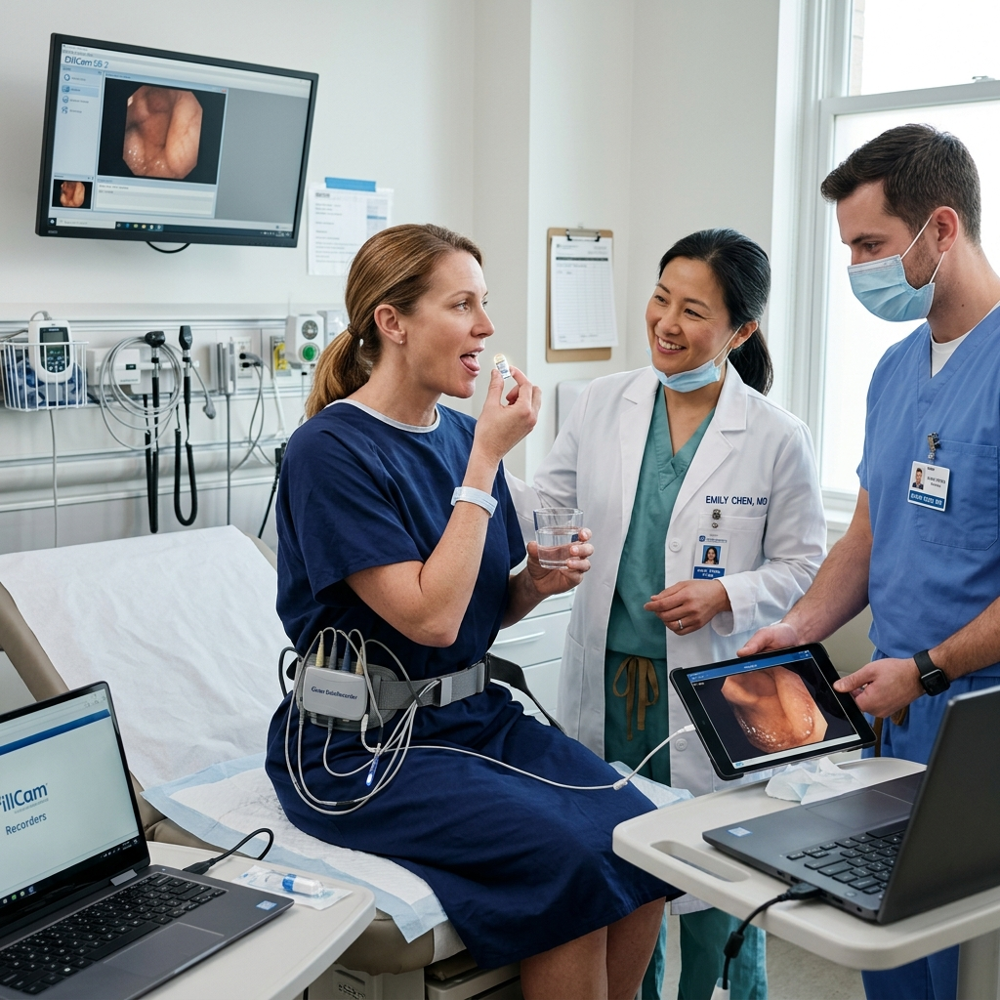
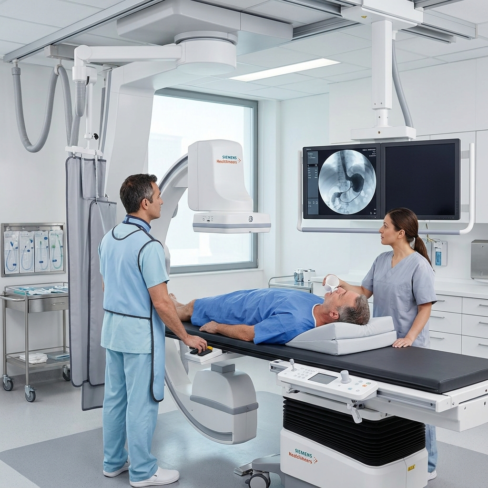
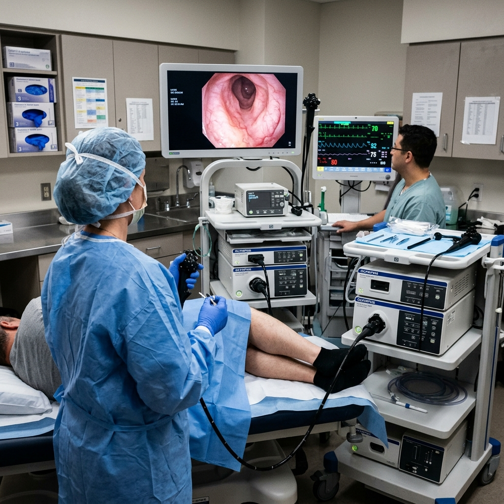
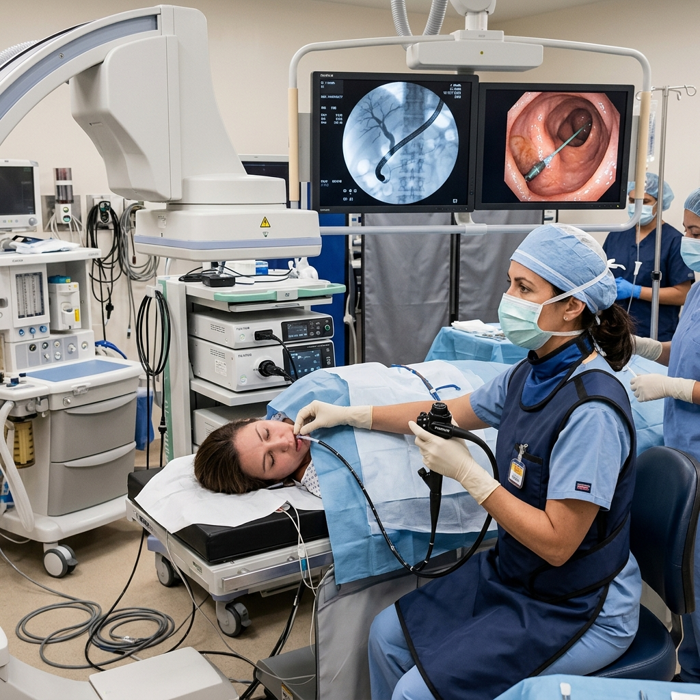
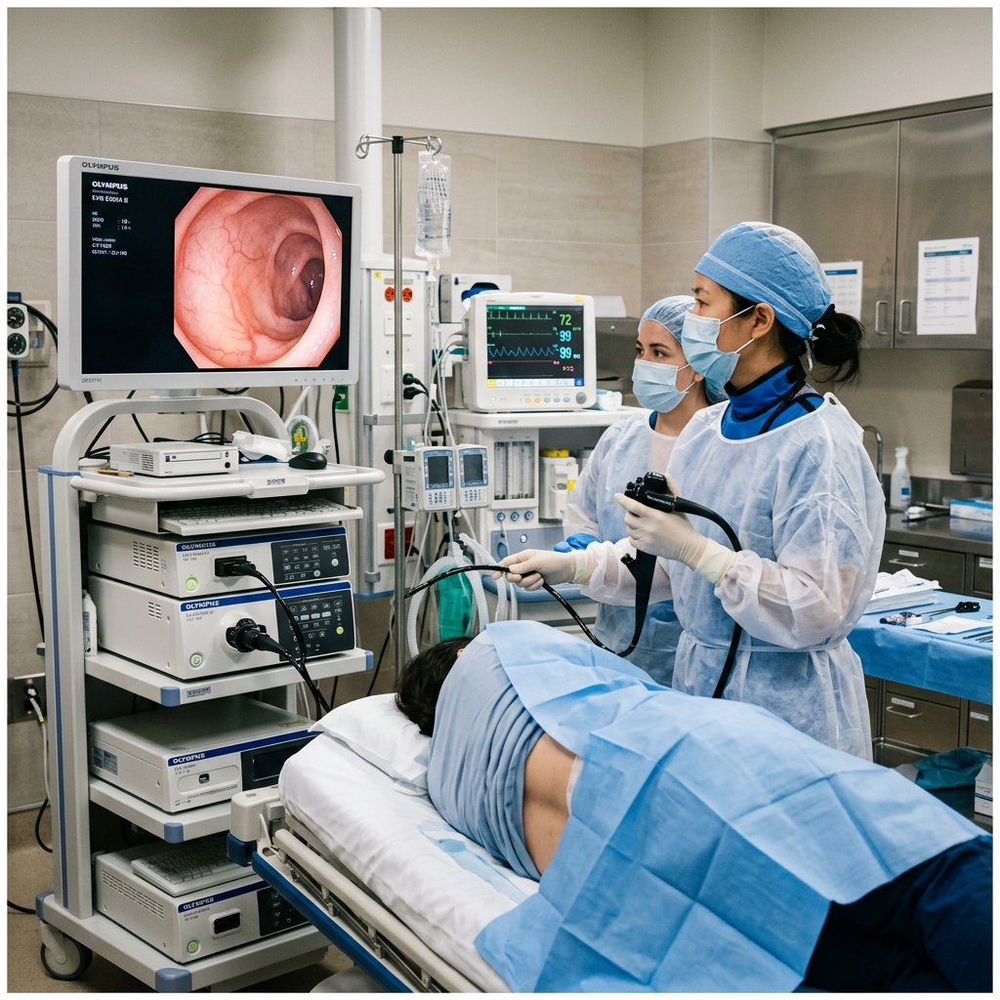
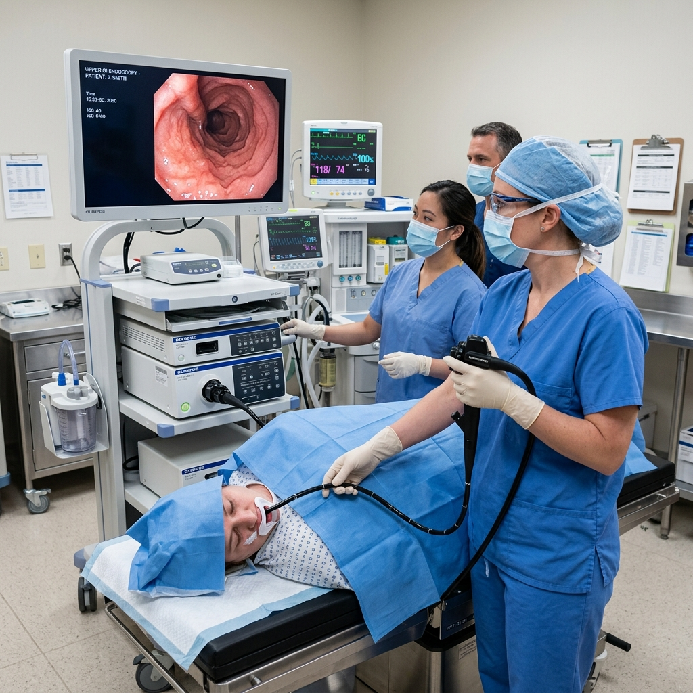

Experience world-class Advanced Gastro Care in Mysore led by Dr. Deepak B G, a highly distinguished surgical gastroenterologist. Specializing in life-saving GI oncology and complex laparoscopic procedures, we combine precision with compassion to provide the most effective treatment for your digestive health.

Comprehensive management of complex gastrointestinal disorders
Expert diagnosis and treatment for all your gastrointestinal problems.
Over 1000 successful GI oncology surgeries performed with precision.
Recognized as the leading Laparoscopic Gastro Surgeon in Mysore, performing complex minimally invasive procedures.
Dedicated excellence in surgical gastroenterology

As a premier Gastrointestinal Surgeon in Mysore, Dr. Deepak B G brings over a decade of specialized expertise in complex GI surgeries. A highly qualified Dr. Deepak B G Gastroenterologist, he is dedicated to delivering superior outcomes through advanced surgical techniques and compassionate patient care.
Advanced diagnostic and therapeutic procedures performed with precision and care

A swallowable capsule camera to visualize the small intestine in detail.

Imaging technique to examine the digestive tract using barium contrast.

Examination of the lower large intestine to detect abnormalities.

Procedure to diagnose and treat problems in the liver, gallbladder and bile ducts.

Visual examination of the entire large intestine and distal small intestine.

Examination of the esophagus, stomach and the first part of the small intestine.